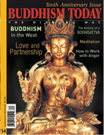

You can order this issue from the Diamond Way USA Dharma Shop.
Number 14 — Spring/Summer 2004
The Tenth Anniversary Issue
Message to all Dharma Students
From the 16th Karmapa Ranjung Rigpe Dorje
The Actions of a Bodhisattva
The 17th Karmapa Thaye Dorje
Seven Points on Meditation
Kunzig Shamar Rinpoche
Yidams-the Source of Accomplishments
Jamgon Kongtrul Rinpoche
The Bardo of Dying
The Intermediate States
Lopon Tsechu Rinpoche
Why Do Prostrations?
Lama Gendyn Rinpoche
How to Work with Anger
Gyaltrul Rinpoche
Generosity-a Buddhist Perspective
An interview with Topga Yulgyal Rinpoche
Buddhism in the West
An interview with Lama Jigme Rinpoche
Love and Partnership
Lama Ole Nydahl
Study as Practice
An Interview with Hannah Nydahl
Taking Refuge in the Sangha
Manfred Seegers
The Life of Milarepa
Brooke Webb
The Healing Tradition of Medicine Buddha
Robert Sachs
DEPARTMENTS
EDITORIAL: To Our Readers
GLOSSARY: Basic Buddhist Terms